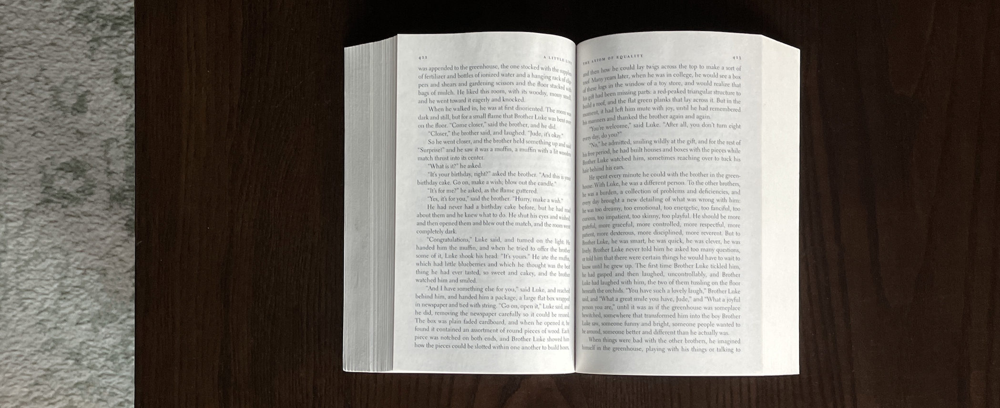
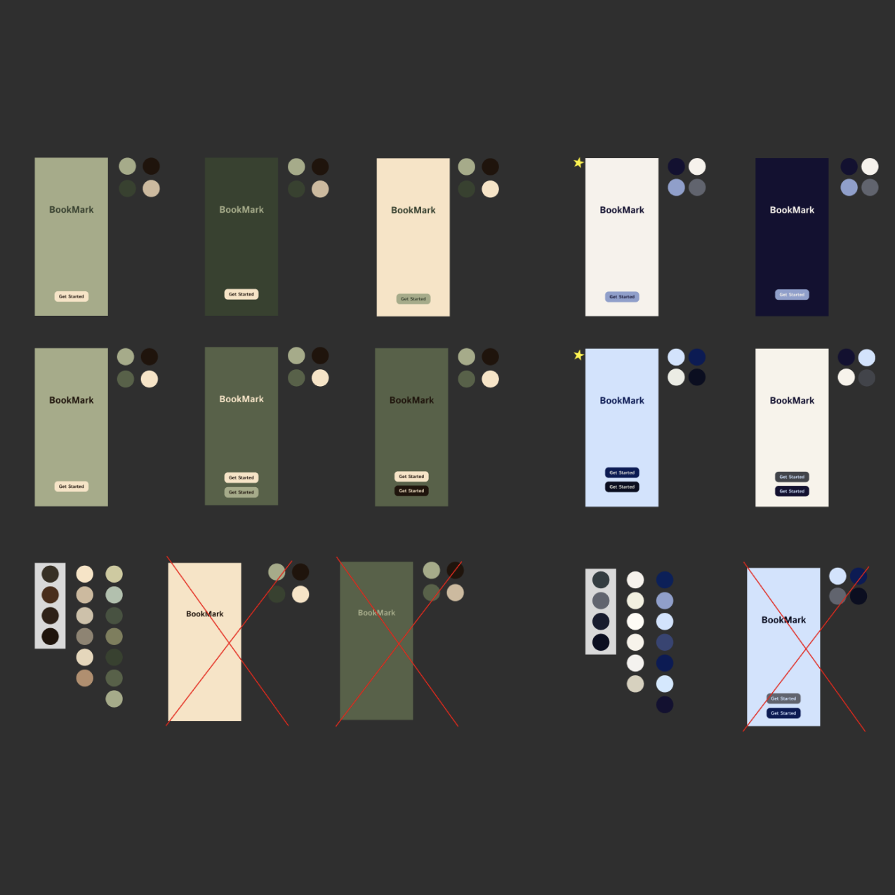
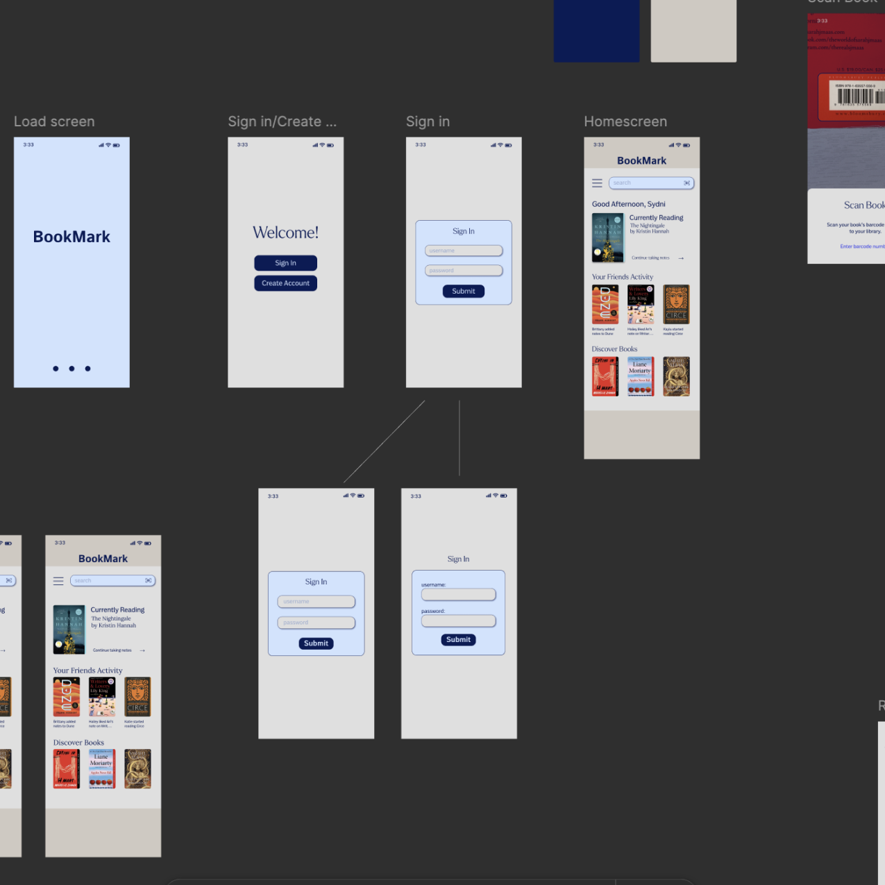
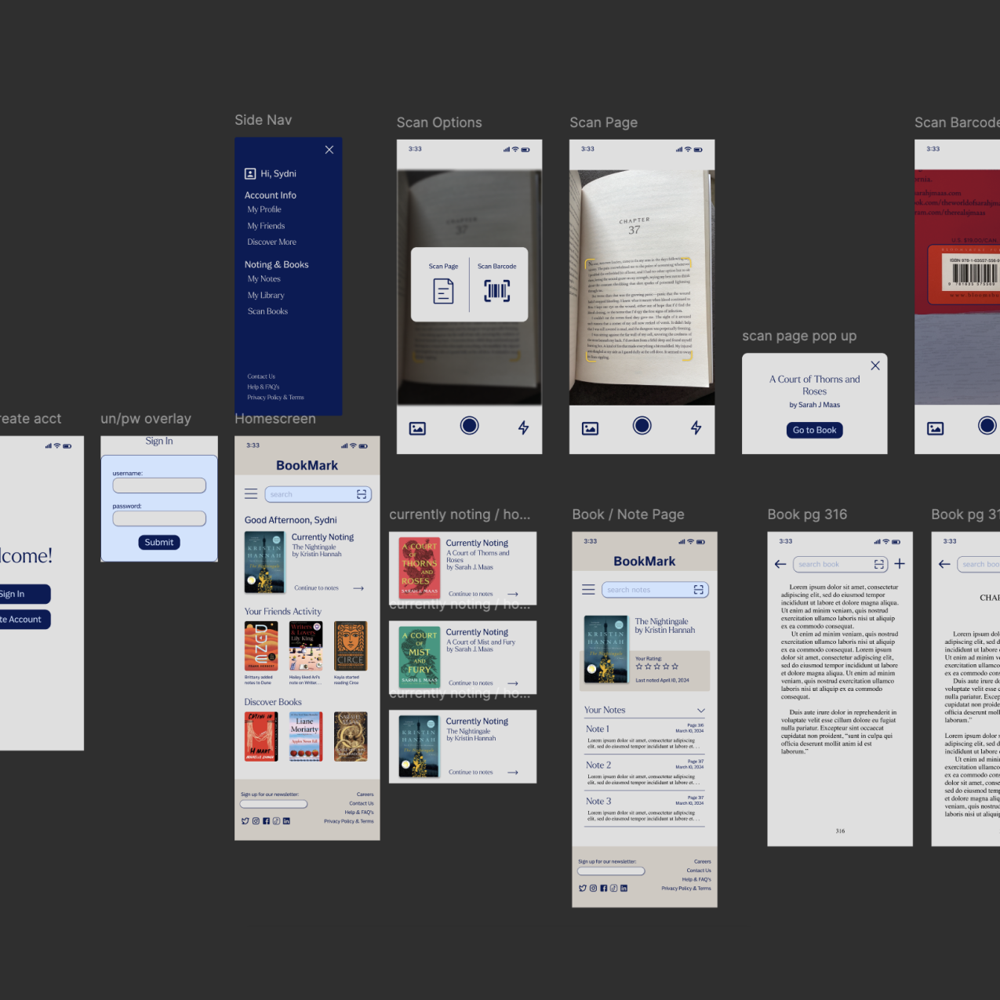
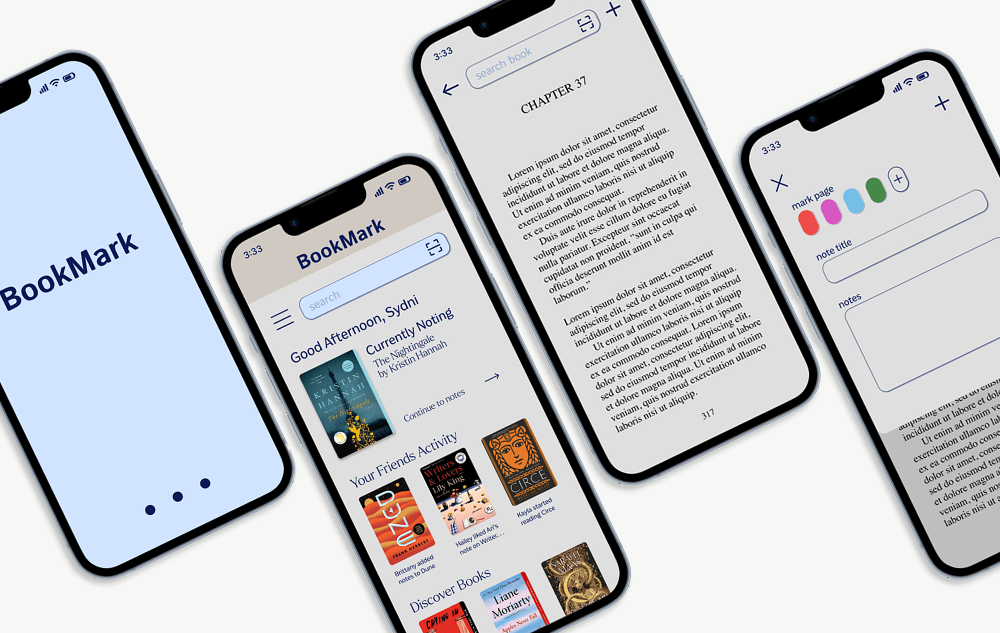

BookMark is a project that examines the lack of digital
note-taking methods that allow for an organized, customizable, and intuitive experience, and explores how to remedy that lack through research, design and community.
Where BookMark Began
Let me take you back in time for a minute. It's September of 2023 and I have just begun reading A Court of Thorns and Roses, the first in a five book series by Sarah J. Maas. Little did I know she has written two other series, Throne of Glass and Crescent City, which I promptly picked up and read as soon as I could. Fast forward four months and I'm now starting my Spring 2024 courses along with what feels like an incurable book hangover after finishing all 16 books in the Sarah J. Maas universe.
With my UX Design course in full swing, we are all tasked with brainstorming ideas and creating a project that incorporates using UX research and design. At this point in time, books are still the only thing on my mind so I considered how I might use that to my advantage for this project. I could not stop thinking about reading, so how I could I make reading my homework? Well, a re-read of course. Now picture me sitting at my desk with a lightbulb illuminating above my head – a book app! More specifically, a note-taking app, because for said re-read I want to take notes but I do not want to mark up my physical books.

So there poses my problem: How can I keep my books looking like the image above, even after taking notes?
This problem is two-fold, not only was I looking for a way to take notes outside of the pages, I also knew it would be important that those notes were available for easy future reference. And so, the first stages of BookMark research and prototyping began. Jumping ahead to September of this year, I took my existing BookMark project and adjusted the problem statement.
How can I efficiently and digitally take notes, share them, organize them, customize them and have quick and easy access for future reference?
Research
Before I could dig into the best part (designing), I had to do some research. Who would use a book note-taking app? Why would people use it? How would they want to use it? Do people other than myself even take notes when they read? I had an endless stream of questions, so I conducted interviews with a handful people who I would consider potential users. From this small sample group, I was able to articulate what type of person does take notes and better understand how a note-taking flow would appeal to them. I also conducted market research to see what exists already that potentially solves this problem.

The color schemes created and shared for feedback before starting the BookMark brand.

The very first draft of BookMark's prototype taking shape.

The final prototype draft of BookMark for UX Design Spring 2024.
What I learned from research and feedback here

Rebranding
Before I could dig into the best part (designing), I had to do some research. Who would use a book note-taking app? Why would people use it? How would they want to use it? Do people other than myself even take notes when they read? I had an endless stream of questions, so I conducted interviews with a handful people who I would consider potential users. From this small sample group, I was able to articulate what type of person does take notes and better understand how a note-taking flow would appeal to them. I also conducted market research to see what exists already that potentially solves this problem.